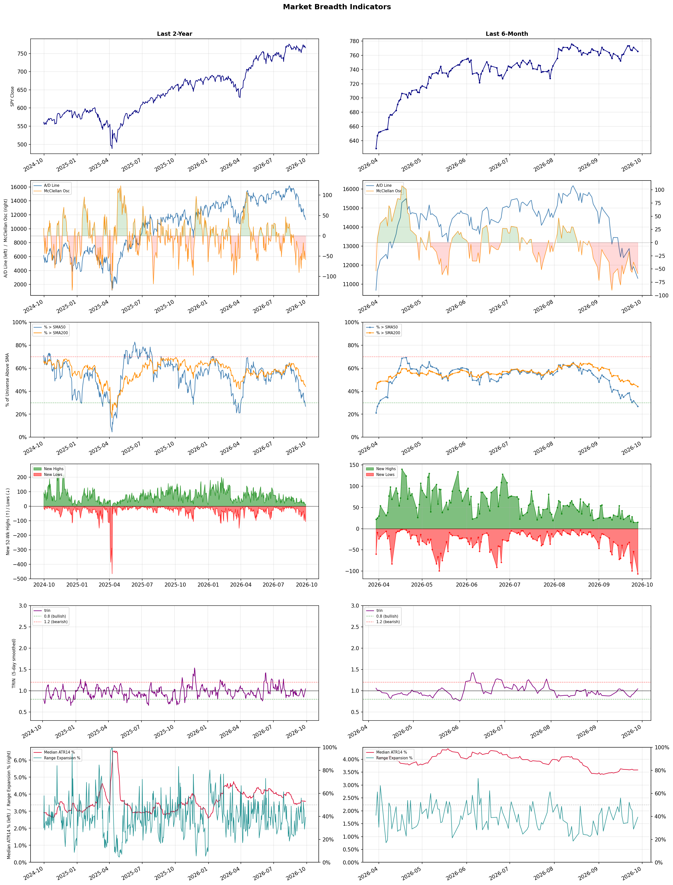

A daily market breadth and sector rotation report for active investors
| Item | Read |
|---|---|
| Regime | Defensive |
| Risk posture | Defensive |
| Universe | 1,319 stocks tracked · 15 new 52-week highs · 30 active swing setups |
| Breadth | only 26.8% of tracked stocks are above SMA50, new lows exceed new highs (106 vs 15), McClellan oscillator (breadth momentum) is negative at -58.7 |
| Leadership | Oil & Gas Refining & Marketing, Diagnostics & Research, and Health Information Services |
| Weakest groups | Gambling, Resorts & Casinos, and Solar |
Use this report to prioritize research and chart review; validate entries, stops, liquidity, earnings, and risk before acting.
| Item | Read |
|---|---|
| Primary read | Defensive regime with Defensive risk posture. |
| Research queue | PBF, DINO, MPC, VLO, UGP |
| Leadership focus | Oil & Gas Refining & Marketing, Diagnostics & Research, and Health Information Services |
| Caution list | Gambling, Resorts & Casinos, and Solar |
| Review prompt | Check extension risk, chart location, fundamentals, valuation, and earnings before using any research row. |
| Item | Read |
|---|---|
| Primary read | 4 active risk warnings; use screen output as watchlist input only. |
| Bullish screens | TXG, VTRS, AMC, CNK, ABCL |
| Bearish screens | RZLV, MIAX, WVE, XRAY, CNX |
| Alerts / levels | Automated trigger, stop, ATR, liquidity, reward/risk, and event-risk levels are pending future enrichment. |
| Review prompt | Open the linked chart, define trigger and invalidation, then check liquidity and event risk independently. |
Risk Posture: Defensive — screen backdrop favors caution; require independent risk review before new exposure
Metric context: McClellan below -50 = elevated selling pressure; below -100 = washout territory. Range Expansion = share of stocks with daily range above their 20-day average. Signal Density = share of tracked names appearing in signal screens.
| Breadth Date | % > SMA50 | % > SMA200 | New Highs | New Lows | McClellan | Median Range | Avg Range | Median ATR14 | Range Expansion | Signal Density |
|---|---|---|---|---|---|---|---|---|---|---|
| 2026-09-28 | 26.8% | 44.1% | 15 | 106 | -58.7 | 3.0% | 3.4% | 3.6% | 39.3% | 4.5% |

Prior comparison date: September 25, 2026
| Metric | Prior | Current | Change |
|---|---|---|---|
| Regime | Defensive | Defensive | unchanged |
| Risk Posture | Defensive | Defensive | unchanged |
| % > SMA50 | 31.7% | 26.8% | -4.9 pts |
| % > SMA200 | 46.3% | 44.1% | -2.2 pts |
| New Highs | 15 | 15 | +0 |
| New Lows | 54 | 106 | -52 |
Top-10 industries entering: none. Top-10 industries leaving: none. New multi-signal long setups: ABCL, AMC, CNK, CRM. New multi-signal short setups: BCE, CHTR, CNX, FLO, LAC, LUMN.
| Status | Tickers | Read |
|---|---|---|
| Added | ABCL, AMC, BCE, CERT, CHTR, CNK, CNX, CRM | New technical screen matches vs prior report. |
| Removed | ABR, AKAM, CMCSA, DNUT, DOCN, HIMX, NIO, NTRA | No longer present in today's technical screen matches. |
| Still Active | AEHR, ALAB, ALKT, AMTM, ARM, FMC, HPQ, LRCX | Appeared in both current and prior reports. |
| Promoted | none | Model Screen Score improved by at least 15 points. |
| Downgraded | none | Model Screen Score declined by at least 15 points. |
| Direction | Industry | ETF | Prior Rank | Current Rank | Days | Rank Change |
|---|---|---|---|---|---|---|
| Rose | Semiconductor Equipment & Materials | SOXX | 78 | 6 | 14 | +72 |
| Rose | Semiconductors | SOXX | 73 | 7 | 35 | +66 |
| Rose | Electronic Components | XLK | 72 | 8 | 14 | +64 |
| Rose | Steel | SLX | 64 | 9 | 35 | +55 |
| Rose | Capital Markets | KCE | 66 | 13 | 42 | +53 |
Bull: The Semiconductor Equipment & Materials sector is experiencing a rise in relative strength primarily due to strong corporate actions and optimism surrounding major players like Nvidia, which recently announced a substantial $150 billion buyback, signaling confidence in future growth and shareholder value. Additionally, stocks like Lam Research and Applied Materials have outperformed the broader sector, reflecting robust demand for semiconductor manufacturing equipment amid ongoing technological advancements and increasing chip demand, despite short-term volatility affecting other companies like Arm and Qualcomm. This positive sentiment is further supported by favorable market conditions, as evidenced by Intel's recent stock surge and analysts highlighting top semiconductor stocks for future growth.
Bear: While the recent buyback by Nvidia may signal confidence, it could also indicate a lack of viable growth opportunities, as companies resort to financial engineering to boost stock prices instead of focusing on innovation. Moreover, the significant selloff in key players like Arm, Qualcomm, and Intel, coupled with rising oil prices and inflation concerns, suggests that the semiconductor sector is facing substantial headwinds that could dampen demand and profitability in the near term. The apparent strength in certain stocks may be misleading, as it does not reflect the underlying volatility and uncertainty plaguing the broader industry.
Verdict: The Semiconductor Equipment & Materials sector's rise is fundamentally driven by strong corporate actions, such as Nvidia's $150 billion buyback, which reflects confidence in future growth and robust demand for semiconductor manufacturing equipment amid ongoing technological advancements. However, investors should be cautious of the bear case risk, as reliance on financial engineering and the significant selloff in key players like Arm and Qualcomm, combined with inflationary pressures, could indicate underlying volatility that may impact long-term profitability and demand.
Sources: Yahoo Finance, Google News
Bull: The semiconductor sector is gaining relative strength primarily due to robust corporate actions and market sentiment, as evidenced by Nvidia's significant $150 billion buyback expansion, which signals strong confidence in future cash flows and profitability. Additionally, the recent rebound in chip stocks, highlighted by reports of top semiconductor stocks being recommended by BofA and a notable jump in Intel's stock, suggests a recovery from recent selloffs, driven by renewed investor interest and optimism about the sector's growth potential amidst broader economic concerns, such as rising oil prices.
Bear: While the recent buyback by Nvidia may signal confidence, it can also be interpreted as a lack of viable growth opportunities, leading companies to return capital to shareholders rather than invest in innovation. Furthermore, the significant selloff in stocks like Arm, Qualcomm, and Marvell indicates underlying weakness in demand and profitability across the sector, which could be exacerbated by rising oil prices and inflationary pressures that dampen consumer spending and chip demand. This suggests that the rebound may be more of a temporary market correction rather than a sustainable recovery.
Verdict: The semiconductor sector's recent rise is primarily driven by strong corporate actions, such as Nvidia's substantial buyback, which reflects confidence in future profitability and has sparked renewed investor interest. However, the key risk lies in the potential for declining demand and profitability, as indicated by selloffs in major companies like Arm and Qualcomm, which could be exacerbated by inflation and rising oil prices impacting consumer spending. Investors should remain cautious and monitor demand trends closely to assess the sustainability of this rebound.
Sources: Yahoo Finance, Google News
Bull: The Electronic Components sector is likely experiencing a rise in relative strength due to positive earnings reports and bullish outlooks from key players, as highlighted by Dell's 7% increase following Morgan Stanley's optimistic $756 bull case, and the mention of promising trends for manufacturing electronics stocks. Additionally, despite broader market declines, the focus on strong Q2 earnings from companies like Benchmark and Jabil indicates robust demand and operational resilience in the sector, positioning it favorably against other industries. This combination of strong financial performance and favorable market sentiment is driving investor confidence in electronic components.
Bear: While the recent uptick in relative strength for the Electronic Components sector may seem promising, it is essential to consider the broader economic context, including rising oil prices and declining overall market sentiment, which can negatively impact tech stocks. Furthermore, the optimism surrounding specific companies like Dell and the positive earnings reports from Benchmark and Jabil may not reflect the sector's health as a whole, especially if many firms continue to struggle with supply chain disruptions and inflationary pressures that could erode profit margins moving forward. This suggests that the current bullish outlook may be overly optimistic and vulnerable to shifts in macroeconomic conditions.
Verdict: The Electronic Components sector is likely rising due to strong earnings reports and positive outlooks from key players, indicating robust demand and operational resilience. However, investors should remain cautious of the broader economic risks, such as rising oil prices and persistent supply chain disruptions, which could undermine profit margins and dampen the sector's growth trajectory. Monitoring these macroeconomic factors will be crucial for assessing the sustainability of the current bullish sentiment.
Sources: Yahoo Finance, Google News
Bull: The rising relative strength of the steel industry, as indicated by the VanEck Steel ETF (SLX), is likely driven by robust demand fueled by advancements in AI and infrastructure projects, which are leading to increased steel consumption. Despite recent selloffs in individual stocks like Cleveland-Cliffs and Nucor, the overall industry outlook remains positive, suggesting that the market is recognizing the long-term growth potential of steel, particularly as companies like Steel Dynamics continue to perform well relative to their peers. Additionally, the focus on infrastructure and manufacturing recovery post-pandemic is contributing to a favorable environment for steel producers.
Bear: While the bull thesis highlights rising relative strength and robust demand for steel, it overlooks significant headwinds that could undermine this growth. The recent selloff in key players like Cleveland-Cliffs and Nucor suggests underlying vulnerabilities, such as potential overcapacity and rising input costs, which could erode margins. Additionally, the steel industry's reliance on cyclical infrastructure spending may falter if economic conditions deteriorate, leading to reduced demand and a more challenging environment for steel producers.
Verdict: The steel industry's rising relative strength is primarily driven by robust demand from infrastructure projects and advancements in AI, which are expected to sustain steel consumption in the long term. However, investors should remain cautious of potential headwinds such as overcapacity and rising input costs, which could pressure margins and impact profitability if economic conditions worsen. It is advisable to monitor key players closely for signs of vulnerability amid these risks.
Sources: Yahoo Finance, Google News
Bull: The Capital Markets sector is experiencing rising relative strength primarily due to a favorable macroeconomic environment and positive sentiment among investors, as indicated by headlines such as "Profit power: Four stock sectors primed for growth" from J.P. Morgan Private Bank and "Is SPDR S&P Capital Markets ETF (KCE) a Strong ETF Right Now?" which suggests heightened interest in capital markets investments. Additionally, the mention of a "midterm mindset" influencing the U.S. stock market implies that investors are positioning themselves for potential gains as they navigate upcoming political and economic developments, further bolstering the sector's attractiveness.
Bear: While the Capital Markets sector may currently exhibit rising relative strength, this could be misleading given the broader economic uncertainties and potential headwinds such as rising interest rates and inflationary pressures that could dampen investor sentiment. Additionally, the "midterm mindset" may lead to increased volatility and uncertainty in the market, as political developments can create unpredictable shifts in investor behavior, potentially undermining the perceived strength of the sector and the sustainability of its recent gains.
Verdict: The Capital Markets sector's rising relative strength is fundamentally driven by a favorable macroeconomic environment, characterized by positive investor sentiment and strategic positioning ahead of midterm elections, which may enhance market activity and investment flows. However, key risks include rising interest rates and inflationary pressures, which could undermine investor confidence and lead to increased market volatility, potentially jeopardizing the sustainability of recent gains. Investors should closely monitor economic indicators and political developments to adjust their strategies accordingly.
Sources: Yahoo Finance, Google News
| Direction | Industry | ETF | Prior Rank | Current Rank | Days | Rank Change |
|---|---|---|---|---|---|---|
| Fell | Travel Services | N/A | 23 | 77 | 42 | -54 |
| Fell | Restaurants | N/A | 25 | 79 | 35 | -54 |
| Fell | Uranium | URA | 31 | 82 | 35 | -51 |
| Fell | Real Estate Services | N/A | 37 | 84 | 35 | -47 |
| Fell | Packaging & Containers | N/A | 31 | 78 | 28 | -47 |
Bear: While geopolitical tensions and economic uncertainty are indeed impacting the Travel Services sector, the underlying issue may be more structural than cyclical. The recent headlines indicate a growing reliance on technology and AI solutions in travel planning, which could disrupt traditional business models and create competitive pressures for established players like Expedia and Marriott. Additionally, as consumers increasingly prioritize safety and flexibility, companies that fail to adapt to these changing preferences may struggle to regain their footing, suggesting that the sector's decline could be more than just a temporary setback.
Bull: The Travel Services sector is experiencing a decline in relative strength primarily due to geopolitical tensions, as highlighted by the Reuters article on the US-Iran conflict, which has led to significant disruptions in travel patterns and consumer confidence. Additionally, the overall economic environment may be affecting discretionary spending, as suggested by the mixed performance of companies like Expedia and Marriott, which are grappling with fluctuating demand in the face of uncertainty. These factors collectively contribute to the sector's current underperformance compared to other industries.
Verdict: The Travel Services sector is experiencing a decline in relative strength primarily due to geopolitical tensions, as highlighted by the Reuters article on the US-Iran conflict, which has led to significant disruptions in travel patterns and consumer confidence. Additionally, the overall economic environment may be affecting discretionary spending, as suggested by the mixed performance of companies like Expedia and Marriott, which are grappling with fluctuating demand in the face of uncertainty. These factors collectively contribute to the sector's current underperformance compared to other industries.
Sources: Google News
Bear: While the bull analyst highlights soft dining traffic and broader economic pressures, it's important to consider that these challenges are not merely cyclical but indicative of a deeper shift in consumer behavior. With rising inflation and an increasing focus on value, many consumers are opting for home-cooked meals or budget-friendly dining options, which could lead to a sustained decline in restaurant patronage. Moreover, the competitive landscape is intensifying, with fast-casual and delivery services gaining market share, further eroding traditional restaurant sales and making it difficult for established players like Restaurant Brands International (QSR) to recover.
Bull: The restaurant industry is experiencing relative weakness primarily due to soft dining traffic, as highlighted in the Seeking Alpha article, which indicates that August saw a decline in consumer visits to restaurants. This downturn in foot traffic, coupled with broader economic pressures affecting discretionary spending, is reflected in the performance of major players like Restaurant Brands International (QSR), whose stock has been adversely impacted, as noted in the Yahoo Finance article. Additionally, the overall consumer discretionary sector's performance, as discussed in the Barchart.com article, suggests that restaurants are struggling to keep pace with other industries, further contributing to their falling relative strength.
Verdict: The restaurant industry's decline is fundamentally driven by soft dining traffic and shifting consumer preferences towards cost-effective alternatives, such as home-cooked meals and budget-friendly dining options, exacerbated by inflation. The key risk from the bear case lies in the intensifying competition from fast-casual and delivery services, which could further diminish traditional restaurant sales and hinder recovery efforts for major players like Restaurant Brands International (QSR). Investors should closely monitor consumer spending trends and competitive dynamics to assess potential recovery opportunities in the sector.
Sources: Google News
Bear: While the bull analyst highlights potential for recovery, the persistent volatility and recent downgrades, particularly of key players like NuScale Power, indicate deeper structural issues within the sector. The divide between profitable producers and loss-making developers suggests that investor confidence is fragile, and any rebound may be short-lived as fundamental concerns around cash burn and project timelines continue to weigh heavily on the market. Additionally, the falling relative strength trend raises doubts about the sustainability of any short-term rallies, signaling that the broader market sentiment towards uranium stocks remains bearish.
Bull: The recent decline in the relative strength of uranium stocks can be attributed to a sector correction that has exposed a divide between profitable producers and loss-making developers, as highlighted by ChartMill. Additionally, the volatility in stock prices, with significant fluctuations in companies like NuScale Power and Oklo, suggests investor uncertainty regarding timelines and cash burn, particularly following UBS's downgrade of NuScale Power to sell, which has contributed to a broader selloff in the sector. Despite this, the rebound in nuclear stocks indicates potential for recovery as the market adjusts to these dynamics.
Verdict: The uranium industry's recent decline is likely driven by a sector correction that has highlighted the disparity between profitable producers and struggling developers, compounded by investor uncertainty around cash burn and project timelines, particularly following downgrades of key players like NuScale Power. The key risk from the bear case is the fragility of investor confidence, which could hinder any potential recovery and lead to sustained bearish sentiment if fundamental concerns persist. Investors should remain cautious and closely monitor the financial health of producers and developers alike before making significant commitments in this space.
Sources: Yahoo Finance, Google News
Bear: While the bull analyst attributes the decline in the Real Estate Services sector primarily to AI-related concerns, this perspective overlooks fundamental issues such as rising interest rates, which are significantly increasing borrowing costs and dampening real estate investment activity. Additionally, the ongoing shift towards remote and hybrid work models is likely to create long-term structural challenges for office real estate, suggesting that the sector may face sustained headwinds beyond just temporary market fears related to technology.
Bull: The Real Estate Services sector is experiencing a decline in relative strength primarily due to heightened concerns surrounding the impact of artificial intelligence on traditional office real estate, as highlighted by headlines discussing the "AI disruption casualties" and the "AI scare trade." Additionally, the underperformance of key players like CBRE Group and Cushman & Wakefield, as noted in recent earnings reports, reflects broader market anxieties about the sector's ability to adapt to changing demand dynamics, particularly in the face of evolving workplace trends and technological advancements.
Verdict: The Real Estate Services sector's decline is primarily driven by a combination of rising interest rates, which are increasing borrowing costs and suppressing investment activity, alongside structural challenges posed by the shift to remote and hybrid work models. While concerns about AI disruption are valid, the more pressing risk lies in the long-term implications of these fundamental shifts in workplace dynamics, suggesting that investors should approach this sector with caution and consider diversifying their portfolios to mitigate exposure to potential sustained headwinds.
Sources: Google News
Bear: While the bull analyst highlights the resilience of certain companies, the broader Packaging & Containers industry is facing significant structural challenges that cannot be overlooked. Geopolitical tensions, such as the Iran war, are not only disrupting supply chains but also leading to increased costs and uncertainty that could stifle growth for the entire sector. Furthermore, the declining relative strength trend indicates that even the so-called strong players may struggle to maintain profitability in a contracting market, raising concerns about their ability to deliver sustained performance amidst ongoing economic pressures.
Bull: The Packaging & Containers industry is experiencing a decline in relative strength primarily due to macroeconomic pressures, including the impact of geopolitical tensions such as the Iran war, which has disrupted supply chains and increased costs for packaging materials. Additionally, recent headlines indicate that despite industry challenges, companies like Avery Dennison and AptarGroup are highlighted for their resilience, suggesting that while the sector faces headwinds, there are still strong players capable of navigating these difficulties and potentially driving future growth.
Verdict: The Packaging & Containers industry is experiencing a decline due to macroeconomic pressures and geopolitical tensions, particularly the Iran war, which are disrupting supply chains and escalating costs. While companies like Avery Dennison and AptarGroup may demonstrate resilience, the overarching trend indicates significant structural challenges that could hinder profitability across the sector. Investors should be cautious, as the ongoing economic pressures may limit growth potential and profitability for even the strongest players in the market.
Sources: Google News
| Industry | Rank | ETF | 7d | 14d | 28d | 42d | Chg 42d | Size | 20D | 60D | Composite | Active Setups |
|---|---|---|---|---|---|---|---|---|---|---|---|---|
| Oil & Gas Refining & Marketing | 1 | CRAK | 2 | 1 | 3 | 4 | +3 | 6 | 6.9% | 47.6% | 0.969 | 0 |
| Diagnostics & Research | 2 | N/A | 1 | 2 | 1 | 1 | -1 | 16 | 10.2% | 28.3% | 0.950 | 0 |
| Health Information Services | 3 | N/A | 3 | 4 | 2 | 2 | -1 | 12 | 10.3% | 32.6% | 0.895 | 0 |
| Oil & Gas Integrated | 4 | XLE | 14 | 3 | 22 | 14 | +10 | 10 | 3.9% | 23.4% | 0.875 | 0 |
| Computer Hardware | 5 | XLK | 6 | 39 | 26 | 3 | -2 | 15 | 8.6% | 14.4% | 0.864 | 1 |
| Semiconductor Equipment & Materials | 6 | SOXX | 36 | 78 | 76 | 19 | +13 | 17 | 11.9% | -2.0% | 0.857 | 1 |
| Semiconductors | 7 | SOXX | 11 | 64 | 57 | 44 | +37 | 38 | 10.4% | -5.9% | 0.812 | 1 |
| Electronic Components | 8 | XLK | 15 | 72 | 62 | 17 | +9 | 10 | 6.7% | -6.9% | 0.803 | 1 |
| Steel | 9 | SLX | 5 | 10 | 37 | 20 | +11 | 5 | 0.2% | 15.1% | 0.777 | 0 |
| Software - Infrastructure | 10 | IGV | 4 | 13 | 10 | 11 | +1 | 62 | -2.6% | 6.3% | 0.729 | 1 |
Rank columns (7d–42d) show the industry's rank that many trading days ago — lower is stronger. Chg 42d = rank change vs 42 trading days ago — positive means the industry moved up. 20D and 60D are the mean stock return within the industry over that period. Active Setups: count of today's swing-trade candidates from this industry appearing across all signal screens.
| Industry | Rank | ETF | 7d | 14d | 28d | 42d | Chg 42d | Size | 20D | 60D | Composite | Active Setups |
|---|---|---|---|---|---|---|---|---|---|---|---|---|
| Gambling | 87 | N/A | 85 | 46 | 52 | 79 | -8 | 5 | -19.3% | -22.8% | 0.044 | 0 |
| Resorts & Casinos | 86 | N/A | 86 | 75 | 85 | 67 | -19 | 6 | -13.2% | -18.7% | 0.056 | 0 |
| Solar | 85 | TAN | 77 | 86 | 88 | 88 | +3 | 8 | -10.7% | -32.4% | 0.101 | 0 |
| Real Estate Services | 84 | N/A | 69 | 62 | 50 | 60 | -24 | 9 | -14.9% | -16.7% | 0.109 | 0 |
| REIT - Mortgage | 83 | N/A | 68 | 60 | 43 | 62 | -21 | 11 | -12.2% | -14.2% | 0.111 | 0 |
| Uranium | 82 | URA | 71 | 69 | 34 | 49 | -33 | 6 | -20.3% | -14.6% | 0.129 | 0 |
| Chemicals | 81 | N/A | 87 | 84 | 86 | 86 | +5 | 8 | -11.2% | -21.7% | 0.131 | 0 |
| Leisure | 80 | N/A | 84 | 68 | 74 | 73 | -7 | 9 | -11.8% | -14.7% | 0.139 | 0 |
| Restaurants | 79 | N/A | 81 | 52 | 38 | 51 | -28 | 16 | -12.6% | -15.6% | 0.139 | 1 |
| Packaging & Containers | 78 | N/A | 82 | 59 | 31 | 33 | -45 | 7 | -13.0% | -12.5% | 0.162 | 0 |
Rank columns (7d–42d) show the industry's rank that many trading days ago — lower is stronger. Chg 42d = rank change vs 42 trading days ago — positive means the industry moved up. 20D and 60D are the mean stock return within the industry over that period. Active Setups: count of today's swing-trade candidates from this industry appearing across all signal screens.
These are research candidates from top-ranked stocks, capped at five names per industry to avoid over-concentration. Returns shown (60D, 120D, 250D) are historical — they reflect where prices have already moved, not forward expectations. Extension Risk flags names that may require extra patience or a better entry point. They are not buy signals.
Chart: TV = TradingView chart (opens in browser); PDF = local chart file (if downloaded).
| Ticker | Name | Industry | Industry Rank | Market Cap | 60D Hist | 120D Hist | 250D Hist | Extension Risk | Research Reason | Chart |
|---|---|---|---|---|---|---|---|---|---|---|
| PBF | PBF Energy | Oil & Gas Refining & Marketing | 1 | N/A | 56.2% | 62.8% | 146.6% | Extended | Top-ranked in industry; extended | TV |
| DINO | HF Sinclair | Oil & Gas Refining & Marketing | 1 | N/A | 47.4% | 76.9% | 108.9% | Constructive | Top-ranked in industry | TV |
| MPC | Marathon Petroleum | Oil & Gas Refining & Marketing | 1 | N/A | 46.6% | 59.7% | 101.5% | Constructive | Top-ranked in industry | TV |
| VLO | Valero Energy | Oil & Gas Refining & Marketing | 1 | N/A | 46.1% | 56.2% | 131.1% | Constructive | Top-ranked in industry | TV |
| UGP | Ultrapar Participacoes | Oil & Gas Refining & Marketing | 1 | N/A | 44.8% | 28.3% | 79.9% | Constructive | Top-ranked in industry | TV |
| TWST | Twist Bioscience | Diagnostics & Research | 2 | N/A | 81.0% | 258.3% | 565.2% | Extended | Top-ranked in industry; extended | TV |
| NTRA | Natera | Diagnostics & Research | 2 | N/A | 47.4% | 96.8% | 152.5% | Constructive | Top-ranked in industry | TV |
| ILMN | Illumina | Diagnostics & Research | 2 | N/A | 44.1% | 115.0% | 196.0% | Extended | Top-ranked in industry; extended | TV |
| A | Agilent Technologies | Diagnostics & Research | 2 | N/A | 34.1% | 54.2% | 42.7% | Constructive | Top-ranked in industry | TV |
| RVTY | Revvity | Diagnostics & Research | 2 | N/A | 32.8% | 72.3% | 79.9% | Constructive | Top-ranked in industry | TV |
| TXG | 10x Genomics | Health Information Services | 3 | N/A | 126.9% | 305.6% | 680.4% | Very extended | Top-ranked in industry; very extended | TV |
| SDGR | Schrodinger | Health Information Services | 3 | N/A | 74.8% | 159.0% | 47.2% | Extended | Top-ranked in industry; extended | TV |
| TEM | Tempus AI | Health Information Services | 3 | N/A | 41.2% | 81.7% | 8.3% | Constructive | Top-ranked in industry | TV |
| CERT | Certara | Health Information Services | 3 | N/A | 31.0% | 62.5% | -25.0% | Constructive | Top-ranked in industry | TV |
| HNGE | Hinge Health | Health Information Services | 3 | N/A | 10.0% | 143.2% | 85.3% | Extended | Top-ranked in industry; extended | TV |
| PBR | Petroleo Brasileiro SA Petrobras | Oil & Gas Integrated | 4 | N/A | 31.9% | 4.0% | 67.7% | Constructive | Top-ranked in industry | TV |
| SU | Suncor Energy | Oil & Gas Integrated | 4 | N/A | 25.7% | 4.3% | 67.3% | Constructive | Top-ranked in industry | TV |
| SHEL | Shell | Oil & Gas Integrated | 4 | N/A | 24.7% | 4.3% | 38.1% | Constructive | Top-ranked in industry | TV |
| BP | BP PLC | Oil & Gas Integrated | 4 | N/A | 20.3% | -3.7% | 34.4% | Constructive | Top-ranked in industry | TV |
| XOM | Exxon Mobil | Oil & Gas Integrated | 4 | N/A | 19.3% | 0.5% | 46.4% | Constructive | Top-ranked in industry | TV |
These are technical screen matches from existing signal files. They are not trade recommendations. Trigger, stop, ATR, liquidity, reward/risk, and event risk still require separate validation until those inputs are available.
Model Screen Score is weighted by signal count, industry rank, freshness, and setup type. It is not a probability of profit, expected return, or suitability rating. Industry cap: max 3 candidates per industry.
Signal glossary: Momentum Pullback = stock in an uptrend that has pulled back 10–30% and shows re-entry conditions. MA Compression = short- and long-term moving averages converging, often preceding a directional move. Three-Day Up/Down = three consecutive closes in the same direction. New 52Wk High/Low = price reached a new annual extreme.
Chart: TV = TradingView chart (opens in browser); PDF = local chart file (if downloaded).
| Ticker | Industry | Setups | Close | Industry Rank | Signal Count | Model Screen Score | Reason | Chart |
|---|---|---|---|---|---|---|---|---|
| TXG | Health Information Services | New 52Wk High; Three-Day Up | 88.50 | 3 | 2 | 100 | Multi-signal; top industry breakout | TV |
| VTRS | Drug Manufacturers - Specialty & Generic | New 52Wk High; Three-Day Up | 18.27 | 15 | 2 | 85 | Multi-signal; new-high strength | TV |
| AMC | Entertainment | New 52Wk High; Three-Day Up | 3.29 | 19 | 2 | 77 | Multi-signal; new-high strength | TV |
| CNK | Entertainment | New 52Wk High; Three-Day Up | 38.38 | 19 | 2 | 77 | Multi-signal; new-high strength | TV |
| ABCL | Biotechnology | New 52Wk High; Three-Day Up | 13.92 | 28 | 2 | 70 | Multi-signal; new-high strength | TV |
| CRM | Software - Application | Momentum Pullback | 227.27 | 37 | 2 | 55 | Multi-signal; pullback setup | TV |
| HPQ | Computer Hardware | Momentum Pullback | 31.32 | 5 | 1 | 58 | Single-signal; top industry pullback | TV |
| SMCI | Computer Hardware | Momentum Pullback | 41.78 | 5 | 1 | 58 | Single-signal; top industry pullback | TV |
| AEHR | Semiconductor Equipment & Materials | Momentum Pullback | 98.49 | 6 | 1 | 58 | Single-signal; top industry pullback | TV |
| KLAC | Semiconductor Equipment & Materials | Momentum Pullback | 189.17 | 6 | 1 | 58 | Single-signal; top industry pullback | TV |
| LRCX | Semiconductor Equipment & Materials | Momentum Pullback | 314.47 | 6 | 1 | 58 | Single-signal; top industry pullback | TV |
| ALAB | Semiconductors | Momentum Pullback | 351.31 | 7 | 1 | 58 | Single-signal; top industry pullback | TV |
| ARM | Semiconductors | Momentum Pullback | 283.33 | 7 | 1 | 58 | Single-signal; top industry pullback | TV |
| CERT | Health Information Services | Three-Day Up | 9.13 | 3 | 1 | 55 | Single-signal; top industry setup | TV |
Bearish setups — stocks making new lows or showing persistent downside patterns. Validate carefully before acting.
| Ticker | Industry | Setups | Close | Industry Rank | Signal Count | Model Screen Score | Reason | Chart |
|---|---|---|---|---|---|---|---|---|
| RZLV | Software - Infrastructure | New 52Wk Low; Three-Day Down | 2.12 | 10 | 2 | 55 | Multi-signal; new-low weakness | TV |
| MIAX | Capital Markets | New 52Wk Low; Three-Day Down | 33.91 | 13 | 2 | 55 | Multi-signal; new-low weakness | TV |
| WVE | Biotechnology | New 52Wk Low; Three-Day Down | 3.67 | 28 | 2 | 40 | Multi-signal; new-low weakness | TV |
| XRAY | Medical Instruments & Supplies | New 52Wk Low; Three-Day Down | 9.28 | 30 | 2 | 40 | Multi-signal; new-low weakness | TV |
| CNX | Oil & Gas E&P | New 52Wk Low; Three-Day Down | 31.70 | 32 | 2 | 40 | Multi-signal; new-low weakness | TV |
| ALKT | Software - Application | New 52Wk Low; Three-Day Down | 13.39 | 37 | 2 | 40 | Multi-signal; new-low weakness | TV |
| AMTM | Specialty Business Services | New 52Wk Low; Three-Day Down | 18.49 | 42 | 2 | 35 | Multi-signal; new-low weakness | TV |
| BCE | Telecom Services | New 52Wk Low; Three-Day Down | 20.56 | 49 | 2 | 35 | Multi-signal; new-low weakness | TV |
| CHTR | Telecom Services | New 52Wk Low; Three-Day Down | 111.40 | 49 | 2 | 35 | Multi-signal; new-low weakness | TV |
| LUMN | Telecom Services | New 52Wk Low; Three-Day Down | 5.53 | 49 | 2 | 35 | Multi-signal; new-low weakness | TV |
| FMC | Agricultural Inputs | New 52Wk Low; Three-Day Down | 9.21 | 54 | 2 | 35 | Multi-signal; new-low weakness | TV |
| VRRM | Information Technology Services | New 52Wk Low; Three-Day Down | 2.99 | 56 | 2 | 35 | Multi-signal; new-low weakness | TV |
| LAC | Other Industrial Metals & Mining | New 52Wk Low; Three-Day Down | 2.68 | 66 | 2 | 25 | Multi-signal; new-low weakness | TV |
| SLI | Other Industrial Metals & Mining | New 52Wk Low; Three-Day Down | 1.83 | 66 | 2 | 25 | Multi-signal; new-low weakness | TV |
| UAMY | Other Industrial Metals & Mining | New 52Wk Low; Three-Day Down | 4.26 | 66 | 2 | 25 | Multi-signal; new-low weakness | TV |
| FLO | Packaged Foods | New 52Wk Low; Three-Day Down | 5.65 | 69 | 2 | 25 | Multi-signal; new-low weakness | TV |
How To Use This Report
| Use | Purpose |
|---|---|
| Market map | Start with breadth, regime, risk warnings, and what changed since the prior report. |
| Industry scan | Use leading, deteriorating, rising, and declining industries to focus research. |
| Research queue | Treat long-term candidates as names for deeper fundamental, valuation, and chart review. |
| Technical review | Treat bullish and bearish screen matches as watchlist inputs that require independent trigger, stop, liquidity, and event-risk checks. |
| Source follow-up | Use chart links and source files to verify raw inputs before relying on any row. |
What This Report Is Not
| Not | Meaning |
|---|---|
| Investment advice | The report does not evaluate personal objectives, risk tolerance, tax situation, account type, or suitability. |
| Buy/sell recommendation | Named tickers are research candidates or screen matches, not recommendations to transact. |
| Price target | The report does not provide fair value estimates, targets, or expected returns. |
| Trade plan | Trigger, stop, sizing, reward/risk, liquidity, and event-risk review remain separate user work. |
| Performance claim | Model Screen Score is not validated historical performance or a forecast of future results. |
| Item | Note |
|---|---|
| Version | Daily Report Methodology v1 |
| Model Screen Score | Screen-fit rank based on signal count, industry rank, freshness, and setup type. |
| Not predictive proof | The score is not expected return, probability of profit, historical validation, or suitability analysis. |
| Industry ranks | Composite industry ranks use existing daily ranking outputs and historical rank columns when available. |
| Research candidates | Long-term rows are research candidates from ranked stocks and leading industries, with historical returns labeled as historical only. |
| Technical matches | Bullish and bearish rows are screen matches requiring independent chart, trigger, stop, liquidity, and event-risk review. |
| Source | Status | Rows | Path |
|---|---|---|---|
| Market breadth | present | 1253 | breadth_20260928.csv |
| Industry composite rankings | present | 87 | all_industry_composite_20260928.csv |
| Top ranked stocks | present | 191 | top_ranked_composite_20260928.csv |
| All ranked stocks | present | 1319 | all_stocks_composite_sorted_20260928.csv |
| Top momentum pullbacks | present | 1473 | top_momentum_pullbacks_20260928.csv |
| MA compression | present | 1473 | ma_compression_stocks_20260928.csv |
| Three-day up/down | present | 182 | three_day_up_down_stocks_20260928.csv |
| New 52-week members | present | 121 | breadth_new_52wk_members_20260928.csv |
This report is generated from automated technical screens and is for informational and research purposes only. It is not investment advice, a solicitation, or a recommendation to buy or sell any security. Past performance is not indicative of future results. You are solely responsible for your own investment decisions. Consult a licensed financial advisor before acting on any information herein.